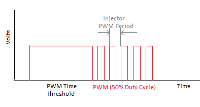
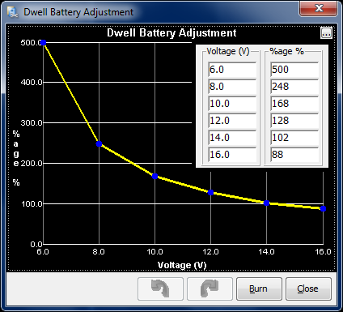
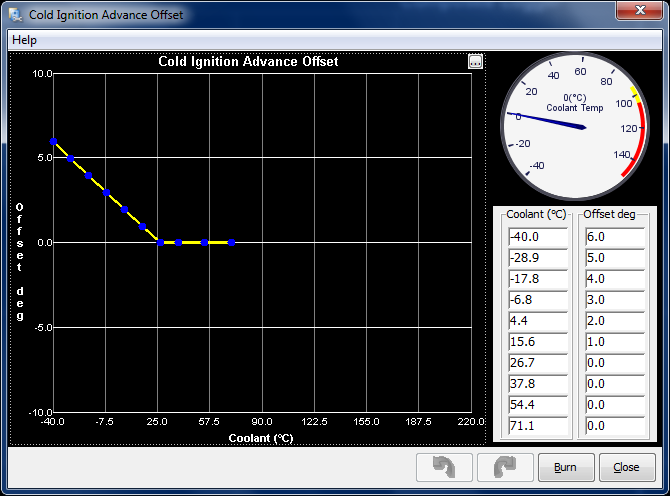
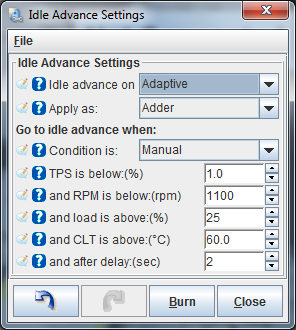
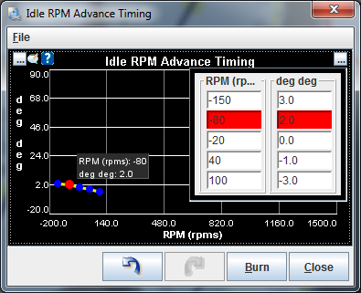
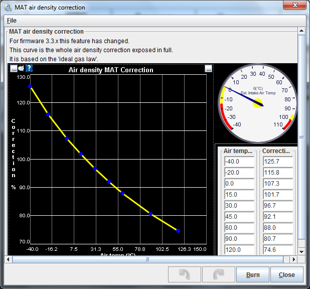

|
Images shown are from Tuner Studio, this is the default tuning software for MS3
Engine and Sequential Settings:
Required Fuel
(Req_Fuel) this is the top field of the Constants
window. It has a calculation dialog to help you find an appropriate value.
It should contain the injector pulse width, in milliseconds, required to supply
the fuel for a single injection event at stoichiometric combustion and 100%
volumetric efficiency.
Ensure that the NUMBER of CYLINDERS has been set before using the wizard!
In order to come up with this value, Tuner Studio provides a calculator that
will suffice for 99% of applications (those for which it will not work generally
require changes to the MegaSquirt controller code itself, and that is beyond
the scope of this manual). To use the wizard, click on the Required Fuel button,
and fill in the fields (Engine Displacement, Number of cylinders, Injector
flow, and Air:Fuel ratio (14.7), then click "Okay").
For a 4-stroke, a complete stroke cycle is 720 degrees of crankshaft rotation
(i.e. two revolutions); for a 2-stroke, it is 360 degrees (this is also factored
in the REQ_FUEL value down loaded to MegaSquirt).
In the tuning software, the upper REQ_FUEL box is the amount per cylinder,
as noted above. The lower REQ_FUEL box is the value down loaded to
MegaSquirt. It is the REQ_FUEL number on top, but scaled by your selected
injection mode (number of squirts and alternate/simultaneous), this can be
ignored as it is the upper number thats the important value.
For example, if you inject simultaneous and one injection, and have the same
number of injectors as cylinders [i.e. port injection], then REQ_FUEL on the
bottom is the same as REQ_FUEL on top. Same with alternate and two squirts.
If you put in simultaneous and two squirts, then REQ_FUEL is divided in half
- because you squirt twice, you need to inject 1/2 the fuel on each shot.
Note: if you choose alternating for port injection, make sure your number
of squirts is an even number (2,4,...) and evenly divisible into the number
of cylinders. For example, with an eight cylinder engine, you could use alternating
and 2, 4, or 8 squirts/cycle. With a six cylinder, if you choose alternating,
you MUST use 2 or 6 squirts/cycle. Also, the only possible combinations for
an odd-cylinder count engine are either 1 squirt/simultaneous or N squirt/simultaneous
combination, where N is the number of cylinders."
Permissable
Combinations:
Number of Cylinders |
|
|
1 |
2 |
3 |
4 |
5 |
6 |
8 |
10 |
12 |
|
1 |
OK |
Simultaneous
only |
Simultaneous
only |
Simultaneous
only |
simultaneous
only |
simultaneous
only |
simultaneous
only |
simultaneous
only |
simultaneous
only |
|
2 |
no |
OK |
no |
OK |
no |
OK |
OK |
OK |
OK |
|
3 |
no |
no |
simultaneous
only |
no |
no |
simultaneous
only |
no |
no |
simultaneous
only |
|
4 |
no |
no |
no |
OK |
no |
no |
OK |
no |
OK |
|
5 |
no |
no |
no |
no |
simultaneous
only |
no |
no |
simultaneous
only |
no |
Number |
6 |
no |
no |
no |
no |
no |
OK |
no |
no |
OK |
of |
7 |
no |
no |
no |
no |
no |
no |
no |
no |
no |
squirts |
8 |
no |
no |
no |
no |
no |
no |
OK |
no |
no |
|
9 |
no |
no |
no |
no |
no |
no |
no |
no |
no |
|
10 |
no |
no |
no |
no |
no |
no |
no |
OK |
no |
|
11 |
no |
no |
no |
no |
no |
no |
no |
no |
no |
|
12 |
no |
no |
no |
no |
no |
no |
no |
no |
OK |
"OK" means the combination will work with either simultaneous or
alternating. "no" means it will not
work with either, i.e., not at all. Vertually all installs will use 2 (4 is
ok for lower RPM engines like V8's) Values of 7 and above would most certainly
not be used.
Control Algorithm - Please see here for more information on this.
Squirts per Engine Cycle is set the number of squirts you want
per engine cycle. You want this to be set so that your idle pulse width is
no less than 2.0 ms, if possible, and your Req_Fuel is less than 12-15 milliseconds,
but more than 8 milliseconds. These values allow proper tuning of the idle
mixture while maintaining the ability to apply enrichments (acceleration,
warm-up, etc.) under full throttle. This is the total injector events that
you wish to occur for every engine cycle (360 degrees for two stroke engines
and 720° for four strokes).
Injector Staging values for injector staging are simultaneous or alternating.
If you want all your injectors to fire at once, select simultaneous. If you
want half your injectors to fire at each injection event, and the other half
on the next event, select alternating.
There is some benefit to choosing 2 squirts/alternating for port injection,
since only half of the injectors fire at once, the pressure drop in the fuel
rails is reduced and the fuelling is more consistent.
With throttle body injection, the number of injection/cycle you can will
depend on your number of cylinders, plenum size, Req_Fuel, etc. You have to
experiment to see what works best for your combination.
Engine Stroke values for engine stroke type are two-stroke or four-stroke.
MegaSquirt uses engine stroke to determine how many degrees are in an engine
cycle.
Number of Cylinders is the count of the cylinders on your engine.
If you are unsure how many cylinders your engine has, you should not be installing
MegaSquirt on it.
Injector Port Type This is not used in MS3, so no settings
needed for this, it should be greyed out.
Number of Injectors is the total number of injectors MegaSquirt is
controlling, whether port or throttle body injection. (this is used in the
Required Fuel calculation)
Engine Type: This has the options of Odd fire or even
fire. Odd-fire or even fire does not refer to the firing order, but rather
the interval between successive firings.
So if you have a 4 cylinder, and a spark every 180 degrees, you have an even
fire. Almost all 4 cylinder engines are even fire. However some 90 degree
V6s, some V4s, and most V-Twins (usually motorcycle engines), as well as a
few others, have 'odd-fire' arrangements.
Sequential Fuel Injection
Main Fuel Outputs is for setting the injector banks that the ECU uses to drive the injectors.
Std Fuel is for the 2 outputs that are built into the main board (V3.0) and gives you the normal banked fired fuel setup with Hi or Lo impedance capability, just like an MS1 or MS2. (Pins 32-33 and 34-35 on the main db37 connector, bottom plug on the MS3 ECU).
MS3X Fuel is when you wish to use the outputs that are built-in to the MS3X card (when fitted) which has 8 outputs for fuel injectors, giving you the capability of running full sequential on an engine up to a V8. These are on the additional db37 loom, top plug on the MS3 ECU. Note: The MS3X Fuel outputs are for Hi-Impedance injectors ONLY!
Sequential On:
OFF for using the normal Std Fuel outputs that give you a bank fired injection mode, these are pins 32-33 and 34-35 on the main db37 (lower db37 connector on the ECU).
Semi-Sequential is used when you wish to fire the injectors in pairs, only a crank signal is needed for this mode (This is for the MS3X board Injector outputs, lower db37 connector on ECU).
Fully-Sequential is when you wish to drive each injector seperatley at a specific angle of the engine cycle. This needs a suitable cam and crank signal. For more on Semi and Full Sequential please click here.
Angle Specifics, please see the MS3 Sequential setup page.
Injector Trim please see the EGT Tuning page.
Firing Order: It is important to enter the correct firing order of your engine in this list as this is how the tuning software works out which injector bank to adjust the fueling on (a, b, c, d, e...) when you select the Fuel Trim for a certain cylinder. e.g. If I select Cy2 Trim the ECU will know that's on Injector Bank H.
General Settings
Barometric Correction:
NONE is no correction, it assumes 100%. Initial MAP Reading (this is the normal setting) is taken when the ECU is first powered up, before the engine starts. This value is then remembered and used for the correction. If you have another sensor wired in then you can select Two Independant Sensors and then select the input pin that is used for the second sensor below, The ECU will constantly read the current baro pressure and correct fueling using that value.
Upper/Lower Limit:
If the ECU resets during running, the MAP sensor will see a lower (or higher if in boost) reading when it re-starts due to it being connected to the engine manifold. So here we can select the limits it should operate within. Usually 100KPa is upper and 90-95 is the lower, depending on where you live with respects to the sea level.
Default Baro:
This is for use with Boost Control to tell it when you go above atmosphere and into boost. This should be set to your normal barometric reading. To find this value out, turn the ignition on and don't start the engine. Start the tuning software up and go to Extended - Barometric Correction. Youll see a gauge in the top corner, make a note of that value. Then go back to this setting and enter the value in here.
MAP Sensor Port:
The MS3 can use several inputs for the MAP sensor, generally, on my ECUs, this would be set to Main Board.
Input Smoothing Lag Factors:
Decreasing the lags makes the values of the variables change slower than the input is changing. 100% is no lag. Generally 50% is fine in these.
New Variable Value = Previous Value + (New Value - Previous Value) * ( LagFactor/100*)
MAP, RPM, TPS, Lambda, etc Lag Factors:
These can be altered to smooth out transients using the above formular, 60-30% works best for these settings, use the above settings unless you have issues.
MAP Sample Window:
This has been designed for ITB's or setups where the MAP fluctuates a lot during the compression stroke. The MAP can be taken within a window of xxdegrees (0-30), 10 is a good starting point, basically you are looking for the lowest map at idle. See also the Map Sample Timing settings.
Secondary Fuel Load:
Secondary fuel load allows a second fuel table to be used for those who feel the need for 31x16 or 16x31 tables for example or blended alpha-n and speed-density. So if you decided to use the second fuel map you could do 20KPa to 100KPa (this would be out of boost) then on the second VE table have 100KPa to your boost limit (e.g. 200KPa). (Don't get this confused with switchable maps, its not the same thing!)
Secondary Fuel:
The secondary map values can either be multiplied as percentages to the main map or added to the main map where they cross over. (Multiply is the normal route here).
So, when you come to tuning the second table you must remember that the VE will be the top line of the first VE table (100KPa for example using a boosted engine) multiplied by the relevant VE value in the second table. So say you were at 4000RPM and 150KPa (7PSI of boost), your VE would be the 100KPa line at 4000rpm (from the first table) x VE at 4000rpm and 150KPa point of the second table / 100. This doesn't really mean anything apart from the VE value may look odd, and MUST be 100 or above. So if set for Multiply: VE value of 80% in the main and 105% in the secondary you'd get 80% x 105% = 84% or if you had 100% and 120% you'd get 120% (i.e. Main x Secondary / 100 = VE%)
Multiply MAP:
This changes the way the VE table values function. The usual equation is to multiply the MAP value (along with other corrections, req_fuel, etc) to find the final Pulse Width. For some engines with very jumpy MAP signals it may be necassery to turn this off to get a smoother tune.
Incorporate AFR Targets:
This includes the AFR table in the fueling equation. So once the VE has be dialled in to match the AFR table, future changes can be made using the AFR table alone. I'd advise to leave it off.
Note: If you switch this on your fueling will completly change, so if you want to use this you will need to tune your map either from the start with it on or tune it all again when you turn it on.
Primary Ignition Load:
This allows the ignition map to follow either Speed Density or Alph_N. See the MAP or TPS page here or the PDF file.
Secondary Ignition Load:
This enables a second spark table that allows blending between Speed Density and Alpha_N.
Note: The two tables are added together! Dont get this confused with switchable maps, its not the same thing!
AFR Load Table and EAE (Enhanced Acelleration Enrichment) load should be set to Primary Load Algorithm settings unless you know what your doing.
Overrun Fuel Cut:
This is to help cut fuel bills. Basically when your in gear and the engine is on overrun (no throttle, slowing down with the engine) there is no point in fueling it. So we can cut fuel during that period, to do this look through datalogs and see where your MAP KPa drops to during over run, ensure that the MAP doesn't wander that low when your cruising or driving normally! Set the KPA Lower value to just above the minimum it goes on overrun, this is best to ensure it is at least 10KPa lower than your crusing KPa. Delay is usually fine at 2S. Ensure the RPM is greater than 1200ish to allow the fuel to cut back in as the engine slows.
Rev Limiter

This system can cut fuel, and or cut sparks in a round robin fashion and or retard the ignition.
Spark Retard is the where the ECU retards the ignition advance to when we hit the Retard Above RPM value. This pulls power out of the engine and helps to slow it down. Different engines react differently to this, some just drive through it, others you can feel slow down.
MODE : OFF when you don't want this function to do anything. FIXED ANGLE when you want to retard the engine to a fixed spark angle, Progressive Retard is when you want a certain amount of advanced pulled out of the spark map, so if you are running at 30deg and you enter 12 as the Maximum retard then the engine will run at 18deg above the Retard RPM.
Spark Cut:
This is where the ECU turns the Spark outputs off. If you have Spark Cut set then you can cut every X from Y spark events: e.g. Cut 4 out of 5 = - -
- -* , - - - -*
, - - - -* Usually this is set at a higher RPM than the Retard Limit (Note an EDIS based setup will not cut sparks as it has a limp home feature that will cut in).
Fuel Cut:
This sets the speed that the engine will reach when it starts to cut fueling off. This is usually set above the Spark Cut RPM.
Coolant Temp Limiter:
The rev limit can be altered with coolant temperature, as a cold engine will need a lower limit than a hot engine. Usually the driver would know not to push the car until it's up to temperature, etc, but you can adjust the rev limit depending on the coolant value. To do this set it to CLT Based and then you can set the graph up for the RPM you want as the limit during the warm up stage. When in this mode the RPM in the graph is the Spark Retard value, the RPM Adder is the additional RPM that's added to the graph value before the spark cut stage occures. So if you enter 500 and the graph has a value of 4000 at 30C, the engine will retard at 4000RPM (when the coolant temperature is around 30C) and spark cut at 4500RPM. As you may want the engine to respond in certain circumstances even when it's cold, you can set the Rev Limit TPS Bypass to override the coolant based settings, a value of 70-90% is recommended here. When the TPS goes over this value the RPM in TPS Bypass value is used as the Rev limiter value.
Fan Control
The ECU can control a cooling fan, much like MS1 and MS2, but now it can increase the engine speed if you have a suitable idle control mechanism. Select Fan Control ON and the output pin that your ECU is wired to use as the fan output (Nitrous2 in this case) The Idleup Delay is the time between the fan coming on and the idle speed being increased and the Idle Steps (Duty) is the increase in opening that the idle valve is given from the MS ECU.
Barometric Correction

The MS ECU's have a table within the fueling calculation algorithm that changes the fueling depending on the barometric correction. To use this table, 99% of users, keep this graph at 100%. If you feel your fueling has altered during the climb up a mountain then this may be an area to look at, but it really should be the last resort.
Map Sample Timing
This has been designed for ITB's or setups where the MAP fluctuates a lot during the compression stroke. The MAP can be taken at a specific angle of crank degrees, basically you are looking for the lowest map at idle. See also the Map Sample Window settings.
Injector Dead Time
Injector Dead Time (ms) is the amount of time required for the
injector to go from a fully closed state to a fully opened state when a 13.2
volt signal is applied. Since fuel injectors are electro-mechanical devices
with mass, they have latency between the time a signal is applied and the
time they are in steady-state spraying mode. Typically, this value is very
close to 1.0 milliseconds. The MegaSquirt code assumes that NO fuel is injected during the opening (and
closing) phases. However, it is very likely that a small amount actually is
injected. Thus making this value larger will enrich the mix and will have
a much greater effect at low pulse widths. MegaSquirt also uses this value
as an additive constant in pulse width calculation, thus making this the lower
limit for pulse width.
MS3X Injectors:
This is for the Injector outputs that are on the MS3X card (top db37 connector on the ECU) You can set up to 4 different curves for the MS3X injector output channels 99% of cases this will be set to SAME. The dead time/voltage curves can be adjusted to your injectors, but it is highly recommended that you leave them at the above settings unless you have data from your injector manufacturer!!
It's also possible to set different Dead Times for each injector bank output, incase there are different injectors in your setup.
Note: MS3X board can Only drive Hi-Impedance Injectors!
Mainboard Injectors:
These are the 2 injector banks that are on the lower db37 wiring loom from the ECU, these can fire in banked injection.
The dead time/voltage curves can be adjusted to your injectors, but it is highly recommended that you leave them at the above settings unless you have data from your injector manufacturer!!
If you are running high-impedance
injectors (greater than 10 Ohms), then set the:
- PWM Time Threshold to 25.5 msec, and the
- PWM Current
Limit (%) to 100%.
If you have low impedance injectors (less than 4 Ohms), set the:
- PWM Time Threshold is the time required to open the injector, this is when full power is used
to open the injector. Start at 1.0 msec.
- PWM Current Limit is the Pulse Width thats used after the Time Threshold, this actually pulses
the injectors on and off, keeping the injector from over heating at high
duty cycles. Try starting at around 30%
For more information on these settings please see click here.
Specific Bank 2 Setting:
If all your injectors are the same, most engines will use the same spec injectors for all cylinders, then keep this set to OFF. If you have staged injection or different injectors connected to each bank then you can specify those for Bank 2 seperately by setting this ON.
Note: This must be set as ON for setting Injection Banks 3 + 4 with different characteristics if using sequential injection with additional drivers fitted.
Injector PWM Period:
This is the time taken for each pulse to turn On-Off when the injector goes into PWM mode. Keep this around 100 - 40uS (66uS is typical)

Injector Small Pulsewidths
Enable Non-linear Small Pulse
Ensure this is set to OFF and that the data in the settings is as above unless you have specific data about your injectors!
AFR/EGO Control
The main system is very similar to MS1 and MS2, but now there are a few other options. (See here for basic EGO control and how to setup your O2 sensors with MS).
Algorithm can be Simple or PID.
Simple is where the ECU looks at the target AFR and compares it to the actual value. If its lean it adds the value you set in Controller Step size to the fueling, if its rich it subracts the same value from the fueling. This means its constantly chasing the target AFR in steps up to the Controller Authority %.
PID (Proportianal Integral Derivitive) is a control method widely used in industry to control systems in a closed loop setup. It starts by calculating an error between its current position and the target position, in this case the AFR target value and current value.
There are 3 parts to the control system:
P (Proportianal Gain): Determins the reaction to the current error calculated.
I (Integral Gain): Determins the reaction based on previous calculations.
D (Derivitive Gain): Alters the reaction based on how much the error has changed.
A bit of trial and error is needed here, but generally 10-20% is good in Proportianal, 60-110% is good in Intergral and I leave the Derivitaive at Zero.
The ECU can also have up to 8 x O2 sensors connected to it. The above example shows 2 connected. One for the even bank and one for the odd bank (V8), this allows the system to tune each bank to the O2 sensor it is feeding, so in this case theres an O2 sensor in each exhaust bank.
In my example (RV8) the Injector Banks from the MS3X card A,D,F and G are connected to the odd bank (Normal EGO on the main board, lower db37 connector) and the other 4 outputs are connected to the even bank, which feeds the O2 sensor connected to MS3X board (top db37 connector) EGO2 ADC12.
AFR Safety System
This can be used to cut the spark outputs when the engine is leaner than the desired AFR. This is ONLY recommended to be used when you have a wideband lambda and needs you to set it up for it to work for your engine. You MUST have a tuned fuel map to use this, it's not to compensate for a poor map or to compensate for other issues!
Enable AFR Safety turns this system ON or OFF.
Warning Output is for connecting it to an LED or buzzer to warn the driver that this system has cut in.
Load Axis should be the same as your AFR Target Table axis.
This is best used for high load and boosted parts of the fuel map. SO generally you would have the Check above 80-90% and above around 2500RPM. How long you wait for the system to cut in is up to you, above example is 1.7 seconds. The Kill Spark for(s) time is the length of time the system cuts spark before it cuts the fuel. This is so that you don't cut fuel first which would cause a lean condition. Usually 0.5S is fine.
The system will not allow the engine to come back to life until all three of the next conditons are met. This means you have to back out of the throttle and allow the engine to slow down a little before power is returned.
In the above example, if your AFR Target Table is at 12.5AFR (at 100KPa) then the limit in the table is 0.6 at 100KPa. So the AFR Safety will cut in when the AFR leans out, for the wait time, by 12.5 + 0.6 = 13.1AFR at 100KPa.
Table Switching/Dual Fuel
The Table Switching function in MS3 is very configurable. It allows you to switch most fueling and spark functions between 2 different tables or settings depending on the state of an input (Switch). It is also possible to switch over at a certain RPM or KPa or TPS, this allows you to run a 31 x 16 map or a 16 x 31 if you really needed to. Most engines don't need this though and tuning is made much harder when you use this function for that purpose.
In the above example the Fuel Table Switching Source is set to RPM, so it will switch over from Fuel Table VE1 to Fuel Table VE3 at 6000RPM. The spark table is set to Hardware, so it needs a switched input to operate (Table Switch input is selected) then it will switch from Spark Table 1 to 3. It is also possible to switch the req_fuel setting over at the same time, or the AFR Target Table and the Stoich (14.7 usually) value if using a different fuel.
You can also run DUAL FUEL's e.g. LPG / Petrol, etc, using an input to switch between the two. This allows you to run a different fuel table, spark table, warmup tables, etc, depending on which fuel you are using. Set Dual Fuel - ON and Mode to Switching. (Note: MODE - Dual Table is for use when you have one set of injectors connected to Bank 1 and another fuel or another type connected to bank 2. This is not used very often and should only be set if advised) The switched fuel table is Fuel Table VE3 and the switched Spark Table is Spark Table 3. The switched Priming Tables, Warmup Enrichment Tables, etc, etc, are the number 2 tables, so Warmup Enrichment 2, etc.
Simply select which options you want to switch with the input and you can then tune these for both fuels.
Output Modes allows you to swaps the injector channels between the MS3X card and the main board injector banks (bottom db37 connector is the main board) when the input to switch fuels comes in.
Ignition Options / Wheel Decoder
Spark Mode:
This is where you select the type of trigger pattern or setup you have. Toothed wheel is for Ford, Vauxhall, etc, crank wheels, like a 36-1, 60-2, etc, etc. Basic Trigger and Trigger Return are for distributor based setups, EDIS, RENIX, etc, are selections specific for your setup if you have that style of trigger input.
Trigger Angle Offset:
This is used for Distributor based setups, see the distributor setup PDF file here. Leave at ZERO for all other setups.
Angle between Main and Return:
is for Trigger return setups (distributor) where the trigger input is a flag that's high for xx deg then goes low for xx degrees. This helps the ECU work out timing more accurately, especially during cranking where rotational speed can vary.
Use Cam Signal:
for setups with 2 trigger inputs, one off the Crank and one off the Cam. Select this to ON for sequential setups.
Skip Pulses:
This is the amount of trigger inputs the ECU waits for before trying to start (enabling the spark outputs), this is to allow the cranking speed to stabilize. 3 - 9 is usual here.
Ignition Input Capture:
This will be setup for your setup, basically if you have a VR input (multiteethed wheels) then this should be Rising Edge. If you have an EDIS or hall sensor input then it will be Falling Edge.
Spark Output:
This is very important and will have been setup for you. If your driving coils directly from the MS ECU then this must be Going High (Inverted) if you have 5V triggers to coils with built-in ignitors then it's likely to be Going Low (Normal)
Number of Coils: Single Coil
is for distributor based setups with a single coil. Wasted Spark is for coil pack engines which have one coil for two cylinders. COP is for single coils for each cylinder.
Note: Wasted Spark setting sets the ECU up so that there are half the amount of spark outputs compared to the cylinders you have set in the Engine and Sequential Settings Page. E.G 4cy Wasted will use Spark A and B whilst an 8cy Wasted will use Spark A, B, C and D.
COP Setting will set the ECU up so that it has the same spark outputs as the number of cylinders, E.G. a 4cy COP will use Spark A, B, C and D, whilst an 8cy COP will use, Spark A, B, C, D, E, F, G and H.
Spark Hardware:
This is for selecting the low current 5V spark outputs on the MS3X board or the main board spark drivers. Depending on how your ECU was built will depend on this setting. Usually you will use the MS3X card spark outputs if you have the MS3X card, as that's one of it's main functions. (MS3X spark outputs are the top db37 connector).
Cam Input:
This selects between the MS3X cam input or the main board (JS10) input, usually the MS3X input will be used. (MS3X cam input is the top db37 connector).
Trigger Wheel Arangement:
Single Wheel with Missing Tooth
This is for single crank or cam input where a pattern is used, e.g. 36-1 crank wheel or a cam signal with a missing toothed pattern.
Dual Wheel
This is for use with a crank and a cam signal, the main signal will have no missing tooth signal, e.g 24 teeth (main) on one of the cam sensors and 1 pulse off a second cam sensor, etc.
Dual Wheel with Missing Tooth
This is for dual wheel systems with the crank having a missing tooth, e.g. 36-1 crank and a single cam pulse, etc.
Trigger Wheel Teeth, see here for more information on this.
Second Trigger Active On: The second trigger input will usually be a single pulse per revolution. Depending on which way that signal triggers depends on this setting, usually it will be low for a hall sensor input, so Falling Edge. A VR sensor could be Rising Edge. MS3 has also been designed to use a 50% cam input. This means that if the cam input is high for 50% of the revolution then low for the other 50%, it can use both trigger edges (Raising and Falling) to trigger the ECU decoder. This allows the ECU to work out where the engine is quicker during the cranking stage, as it doesn't have to wait for a pulse in one direction to calculate its position
Raising Falling Starts With:
This is for 50% cam inputs as above. It is for telling the ECU which edge it will see when the firing sequence should begin (sequential fuel or spark) during cranking. If you get this wrong it will backfire and won't start, you will soon know!
Fixed Advance:
This is used to test your timing is correct using a strobe light. Select Use Table for normal use.
Use Prediction:
This is the algorithm that the MS ECU uses to judge what time to fire the spark based on previous timings from the crank sensor. Every time the ignition fires the crank will accelerate a little. First Deriv Prediction is the usual method.
Cranking Dwell:
Please see the dwell page for more information on this here.
Cranking Advance:
This is the ignition advance that the ECU will fire the coils at during the cranking speed, 10deg is usual here.
Dwell Battery Correction

The MS ECU's correct for dwell (Charge time) times using the standard correction table, as above. This should only be altered from the above if you have specific data about your coils!
Cold Advance

This allows for some advance to be added to the base ignition map when the engine is cold, this aids warmup time and helps to increase the idle speed during the cold period of warmup. Ensure the last bin is just below the operating temp (71C) and is set to ZERO so it follows the ignition map above that temperature.
MAT (Manifold Air Temp) Based Ignition Retard

As air warms up it looses density, this increases the likely hood of detonation, especially in boosted engines. This function can remove advance from the base map when air temps reach the limit to help reduce the likely hood of knock. Ensure the first bin is the usual air temperature you experience, 60-90 C and is set to ZERO like the above.
Noise Filtering
These filters can help eliminate trigger noise by masking or ignoring trigger inputs using the software, that come in at the wrong time due to stray noise. Usually hardware issues are the cause of noise and should be eliminated as the problem before going down the masking route. See here for more on noise. I will try to increase the information on this very soon!
Idle Advance/Idle VE
 
To help the engine idle smoothly an Idle Advance function has been added. This allows you to fix the advance when the engine needs to be stable. The table is to allow for the advance to increase if the engine starts to stumble (this usually happens with an increase in MAP) so as the map increases it can help to add some advance to allow it to stabalize again. MS3 also has the facility to have a different map for the fuel VE at idle, in the same way it controls the ignition (Idle VE). This functions in the same manor as the spark idle advance.
Output Port Settings:
This has to be set carefully as if you select IAC1 or IAC2, for example, as outputs (Enable them) and you have the IAC stepper motor function enabled (these are the same pin on the processor) the code will find a Config Error and stop working until the selection is fixed. Items like PM3 (LH LED), PM4 (RH LED) and PM5 (Middle LED) (LED 14, 16 and 15 respectively) are likely to be used as spark outputs if your not using the MS3X card. See the bottom of your ECU to find out what pins outputs are setup for.
You can soon tell which outputs are enabled by the green highlight beside the output pins name. Set the Power on value and Trigger Value as above for normal use. Once the threshold is made the output will come on. It will stay on untill the condition drops below the threshold by the hysterisis value, so above the output (D16) will come on at 86C and off at 81C. You can also select a second condition, for example TPS above 80% and coolant above 70% for a valve in the intake to change over, etc.
MAT (Manifold Air Temp) Correction

This is to correct for heat soak on the temperature sensor, in some cases the sensor can become heated by external influences, e.g. the manifold if it;s bolted to it. This tends to happen if it's sat in traffic for a while, etc. If this happens then you can trim the correction down, so the engine doesn't go lean due to heat sink. Usually this should be left at 0% correction as above, in some cases an increase around 80C and onwards by 5% or so can help
|